웹사이트 클로너는 어떤 도구인가요
발표자는 지난 영상에서 이미 있는 앱을 뜯어보고 다시 만드는 리버스 엔지니어링 도구 REA를 소개했어요. 이번 도구는 그 웹사이트판이에요. 클로드 코드에 명령어 한 줄과 주소만 넣으면, 화면 구성과 이미지·폰트, 버튼을 눌렀을 때의 움직임까지 살펴본 뒤 직접 고칠 수 있는 코드로 다시 만들어 줘요.
아래 슬라이드 윗줄이 그 관계예요. 왼쪽 REA는 '이미 있는 앱을 뜯어서 다시 만드는 도구', 가운데 초록 칸 AI Website Cloner는 '웹사이트 주소 하나만 넣으면 그 사이트를 다시 만드는 도구'예요. 아랫줄은 쓰는 법이에요. 클로드 코드에 명령어 한 줄과 주소를 주면, 화면 구성부터 움직임까지 본다는 뜻이에요.
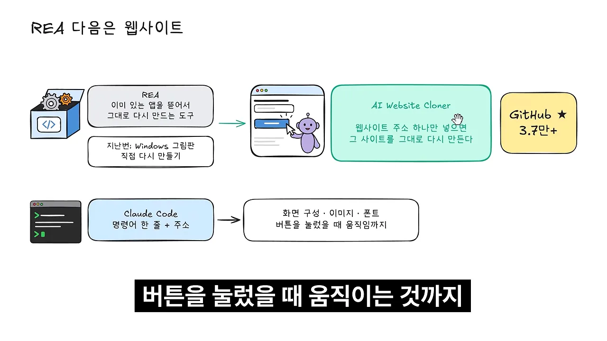
어떻게 퍼졌나요
왼쪽 카드 두 장이 처음 화제가 된 글이에요. 2026년 3월 X에서 'Linus Ekenstam'이 올린 "누가 프롬프트 하나로 웹사이트 전체를 복제하는 Claude Code 스킬을 만들었다"는 글이 조회수 31만을 넘겼어요. 아래 카드는 '스크린샷을 찍어 따라 만드는 것보다 훨씬 똑똑한 방식'이라는 다른 사람의 반응이에요. 오른쪽 막대는 깃허브 스타가 4월 말 1.3만, 7월 중순 2.8만, 영상 시점 3.7만으로 늘어난 모습이고, 노란 칸은 6월 24일 TypeScript 부문 트렌딩 1위를 했다는 표시예요.
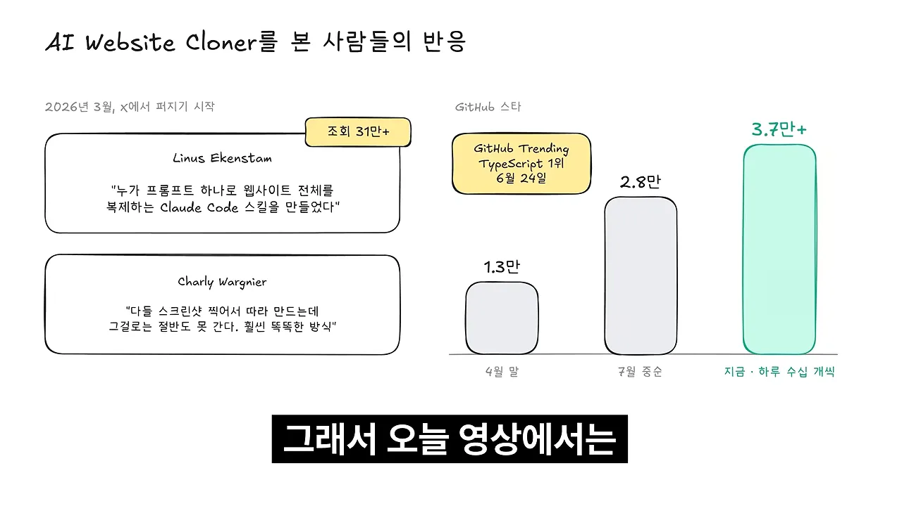
네 단계로 다시 만들어요
정식 이름은 AI Website Cloner Template이에요. 슬라이드처럼 깃허브에 올라온 Next.js 프로젝트 틀에, 클로드 코드가 쓸 복제 명령어를 같이 넣어 둔 템플릿이에요. 아래 검은 칸의 /clone-website https://주소가 그 명령어예요. 슬래시 명령어로 불러도 되고, 일반 문장으로 스킬처럼 불러도 돼요. 어느 쪽이든 복제할 주소는 꼭 같이 줘야 해요.
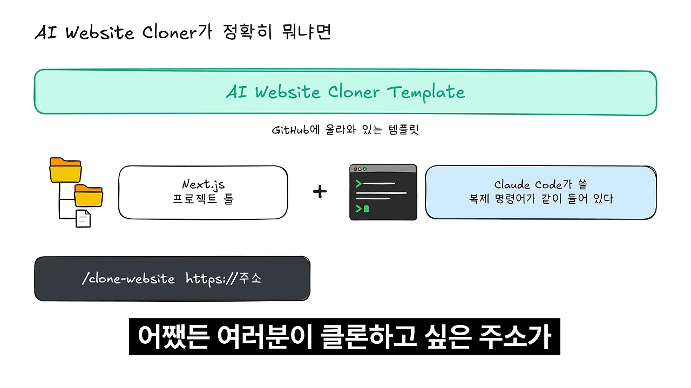
에이전트가 일하는 네 단계
명령을 받으면 에이전트는 네 단계로 일해요. 슬라이드의 파란 칸 네 개가 순서이고, 그 아래 흰 칸이 단계마다 하는 일이에요. 맨 오른쪽 노란 칸 '다른 데 고치고 → 또 비교'에서 Build로 돌아가는 점선 화살표가 '계속 반복'이에요.
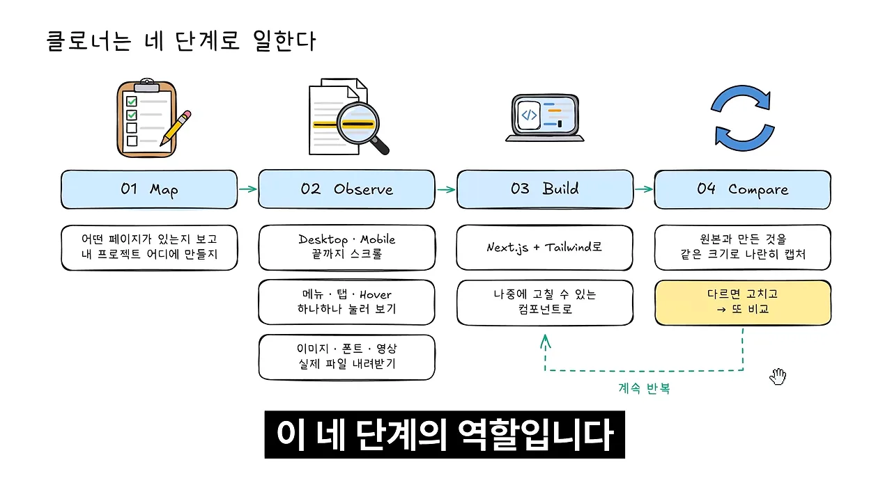
| 단계 | 하는 일 |
|---|---|
| 01 Map | 어떤 페이지가 있는지 보고, 내 프로젝트 어디에 어떻게 만들지 정해요 |
| 02 Observe | 데스크톱·모바일 화면을 끝까지 스크롤하고, 메뉴·탭·마우스 오버를 하나하나 눌러 봐요. 이미지·폰트·영상 실제 파일도 내려받아요 |
| 03 Build | Next.js와 Tailwind로, 나중에 고칠 수 있는 컴포넌트로 짜요 |
| 04 Compare | 원본과 만든 것을 같은 크기로 나란히 캡처하고, 다른 곳을 고친 뒤 다시 비교해요 |
발표자가 가장 강력하다고 본 건 Observe 단계예요. 화면을 눈으로 보는 데서 그치지 않고 실제 파일까지 내려받기 때문이에요.
원본 코드를 빼 오는 게 아니에요
웹사이트를 보고 복제하니 잘못된 것 아니냐는 질문에 발표자는 방식이 다르다고 답해요. 슬라이드 윗줄의 REA는 앱 안을 직접 뜯어보니 소스 코드를 보게 되고, 그래서 지난 영상에서 '조금 위험한 도구'라고 했어요. 아랫줄의 Website Cloner는 화면에 보이는 걸 보고 똑같이 보이게 새로 짜요. 그래서 두 갈래로 나뉜 결과처럼 겉모습은 비슷해도, 원래 코드와는 완전히 다를 수 있어요.
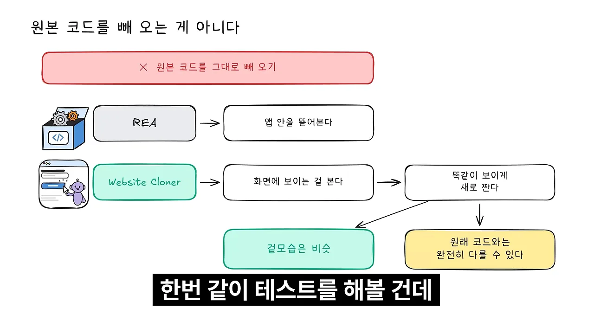
Supabase로 시험한 이유와 설치
시험 대상은 Supabase 홈페이지예요. 바이브 코딩에서 데이터베이스와 로그인 기능을 붙일 때 많이 쓰는 서비스죠. 발표자가 굳이 이 사이트를 고른 데는 이유가 있어요. 슬라이드 가운데 줄을 따라가면 이유가 셋이에요.
- 깃허브
supabase/supabase저장소의apps/www폴더에 지금 보는 홈페이지 코드가 공개돼 있어요. - 라이선스가 Apache 2.0으로 열려 있어요.
- 검은 칸의 robots.txt가
User-agent: *,Allow: /예요. AI 봇까지 전부 들어와도 된다는 뜻이에요.
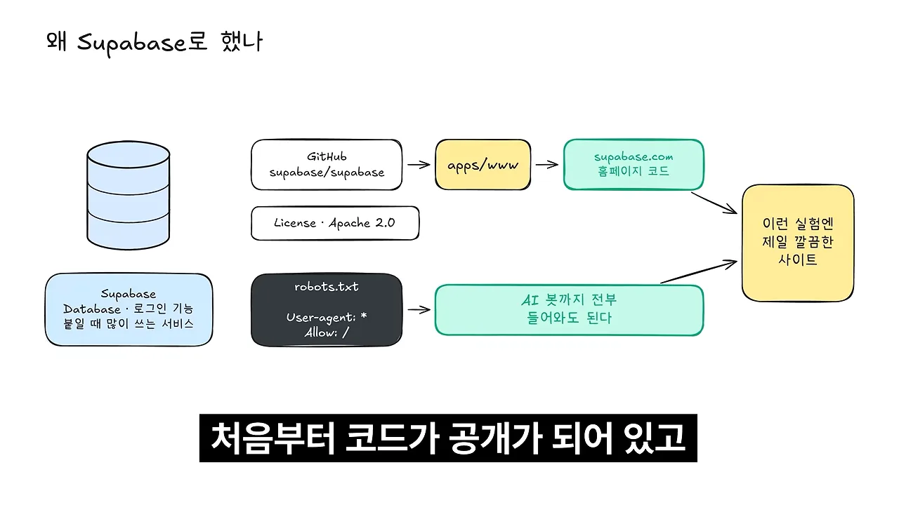
설치는 프롬프트 한 번
설치는 README의 Quick Start에 있는 프롬프트를 에이전트에게 그대로 붙여 넣으면 끝나요. 캡처에서 파랗게 선택된 문단이 그 프롬프트예요. '저장소를 새 폴더에 독립 프로젝트로 받고, origin 원격을 지우고, 의존성을 깔고, npm run check를 돌려 복제할 준비를 해 달라'는 내용이에요. 아래 '2. Clone a website'에 실제로 쓸 /clone-website https://example.com이 보여요.
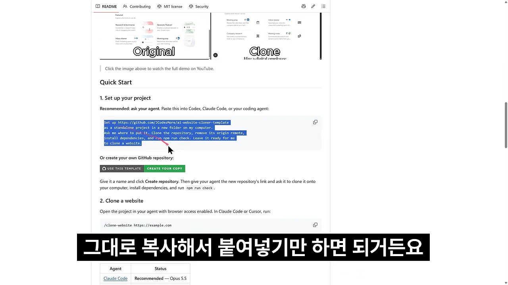
발표자는 모델을 Opus 5.5, 추론 수준 '엑스트라'로 골랐어요. 쓰기 전에 챙길 조건은 두 가지예요.
- Node.js가 24 버전 이상인가요?
- 에이전트가 브라우저를 직접 열어 사이트를 봐야 하니, 클로드 코드에서 브라우저 사용 설정을 켜 뒀나요?
설치가 끝나면 /clone-website supabase.com처럼 입력해요. 원래는 세션을 껐다 켜야 명령어가 제대로 잡힌다고 해요.
이렇게 쓰면 안 돼요
복제가 도는 동안 발표자는 README의 한 섹션을 번역해 보여 줘요. 캡처 가운데 '다음과 같은 용도로 제작되지 않았습니다' 아래 세 줄이에요. 빨간 밑줄이 그어진 두 번째 줄이 '타인의 디자인을 자신의 것처럼 사용하는 것은 금지'예요.
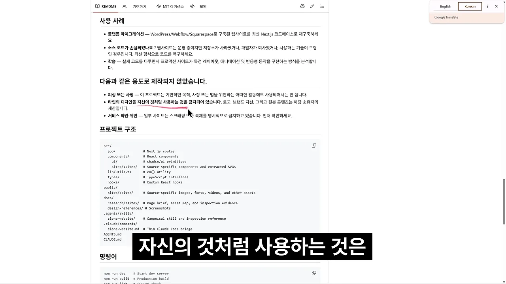
- 피싱·사칭 — 남의 사이트를 똑같이 만들어 진짜인 척하는 건 불법이에요.
- 남의 디자인을 내 것처럼 쓰기 — 로고, 브랜드 자산, 원본 콘텐츠는 원래 주인의 것이에요.
- 이용 약관 위반 — 긁어 가거나 복제하는 걸 아예 금지한 사이트가 있어요. 라이선스와 약관을 먼저 봐야 해요.
Supabase도 코드는 공개지만 로고와 이름은 Supabase 것이고, 홈페이지에 나오는 고객사 로고도 각 회사 것이에요. 그래서 발표자는 복제본을 어디에도 올리지 않고 자기 컴퓨터에서 공부용으로만 봤어요.
결과, 그리고 다른 사이트에서 막히는 이유
결과 화면에서 왼쪽 창은 클로드가 다시 만든 사이트(주소창 localhost:3100), 오른쪽 창은 원래 supabase.com이에요. 두 창 모두 'Open source from day one' 섹션을 띄우고 있어요. 문구 배치와 '114.3K' 같은 큰 숫자 장식까지 같은 자리에 있어요.
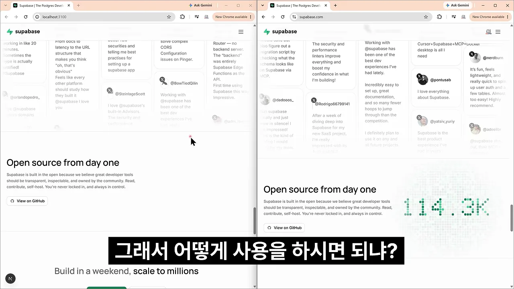
발표자는 '소름 돋을 정도'라고 평하면서도, Supabase가 오픈소스라 복제가 더 수월했던 면은 분명 있다고 덧붙여요.
클로드 코드의 작업 기록을 보면 어떻게 했는지가 남아 있어요. 캡처의 영어 문장들을 따라가면, Playwright로 브라우저를 직접 조종해 섹션 12개를 고해상도로 캡처하고, 색상·글자 크기·폰트 같은 디자인 토큰을 뽑아 Tailwind 테마에 넣어요. 빨간 원 안은 '이미지 대부분이 라이트·다크 버전이 있는 실제 SVG/PNG/영상 파일이니, 에셋 주소를 모아 로컬로 내려받겠다'는 줄이에요. 오른쪽 아래 '서버'에는 결과물이 도는 localhost:3100이 보여요.
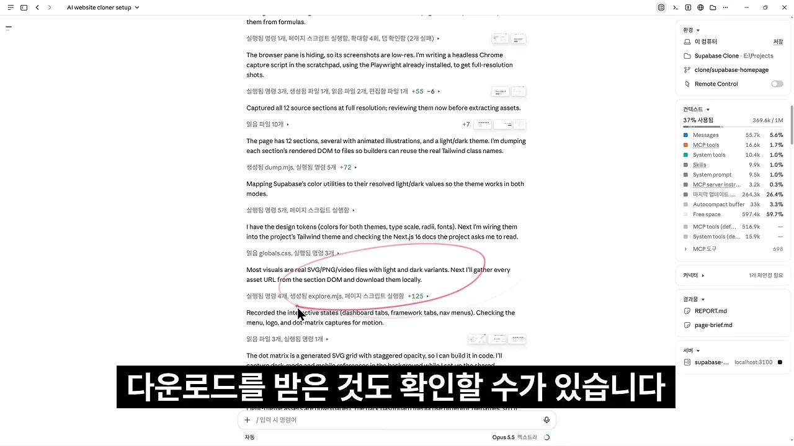
바람직하게 쓰는 법
이렇게 잘 따라 만들기 때문에, 리버스 엔지니어링 때처럼 잘못 쓰면 악용될 수 있어요. 발표자가 생각하는 바람직한 쓰임은 공부예요. 마음에 드는 프론트엔드 UI(User Interface)가 있는데 비전공자라 어떻게 만들었는지 모를 때, 복제해서 구조를 보고 배우는 거예요. 다 배운 뒤 그 구조를 내 사이트에 적용하고, 기존 디자인에 내 취향을 더해 발전시키는 건 악용과는 다르다고 봐요.
다른 사이트에서는 막힐 수 있어요
Supabase에서 일대일 복제가 막힘없이 된 건 AI 봇까지 열어 둔 사이트였기 때문이에요. 다른 사이트에서 똑같이 돌리면 어려울 수 있어요. 도구가 잘못돼서가 아니에요. 에이전트에게 웹을 리서치시키는 일 자체가 점점 어려워지고 있어요.
아래 그림은 발표자의 설명을 옮긴 거예요. 웹사이트 클로너는 화면 크기별로 사이트를 보고 수십 개의 버튼을 눌러 보는 방식이라, 사이트가 '이 클릭은 사람이 아니라 에이전트가 한 거다'라고 알아채기 쉬워요. 그러면 IP(Internet Protocol) 자체를 막아 버리고, 흔히 429 에러가 떠요. 이런 작업을 제대로 하는 사람들은 보통 프록시로 다른 주소를 거쳐 들어가요.
언제 쓰면 좋을까요
깃허브 README가 밝힌 용도는 세 가지예요. 슬라이드의 카드 세 장이 순서대로 플랫폼 이전, 코드를 잃어버렸을 때, 잘 만든 사이트 공부예요.
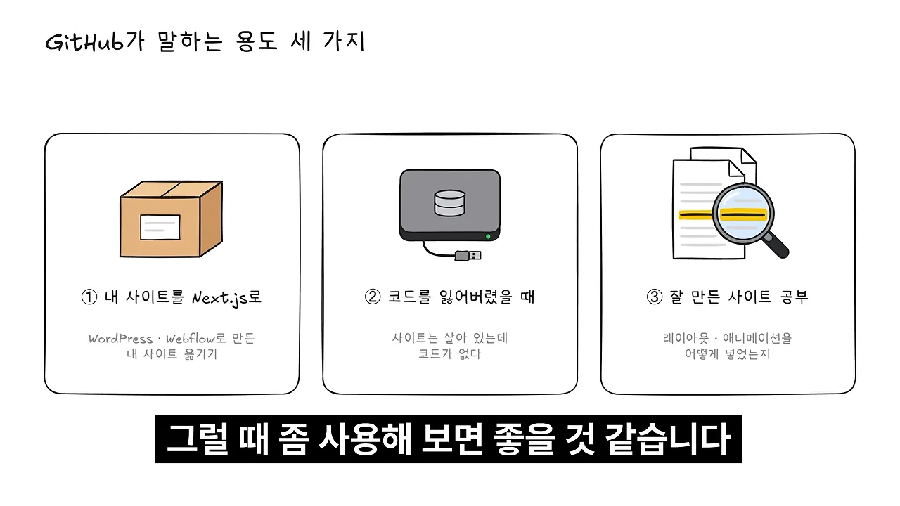
| 용도 | 이런 상황 | 발표자의 설명 |
|---|---|---|
| 내 사이트를 Next.js로 | 워드프레스·웹플로우로 만들어 코드를 밖으로 못 가져와요 | 락인된 내 사이트를 옮기는 거라 문제가 없어요 |
| 코드를 잃어버렸을 때 | 사이트는 살아 있는데 원본 소스가 없어요 | 기술 스택과 상관없이 유지 보수용 코드를 다시 얻어요 |
| 잘 만든 사이트 공부 | 레이아웃과 애니메이션을 어떻게 넣었는지 궁금해요 | 바이브 코딩 실력을 올리는 데 가장 의미 있어요 |
왜 세 번째가 가장 쓸모 있나요
발표자는 바이브 코딩을 하는 사람에게는 세 번째가 가장 의미 있다고 봐요. 슬라이드 윗줄처럼 AI에게 '그냥 만들어 줘'라고 하면 어디서 많이 본, AI 티 나는 사이트가 나와요. 초록 줄은 잘 만든 사이트를 한 번 복제해 보는 길이에요. 간격과 글자 크기를 어떻게 잡았는지, 섹션을 어떤 순서로 쌓았는지 보고 나면 내 사이트 방향을 훨씬 잘 잡게 돼요.
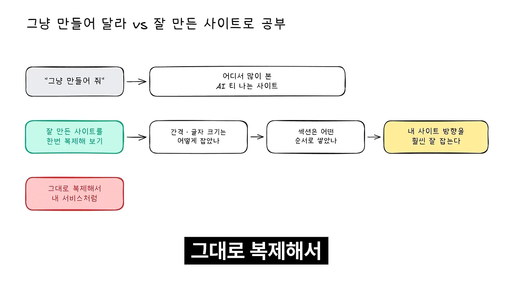
다시 만드는 문턱이 낮아졌어요
마지막 슬라이드는 영상 전체를 한 줄로 묶어요. REA(앱)와 Website Cloner(웹) 덕분에 이미 있는 걸 보고 다시 만드는 문턱이 확 낮아졌어요. 오른쪽 노란 칸처럼, 그만큼 어떤 사이트를 골라서 어디까지 쓰느냐가 더 중요해졌어요. 아랫줄은 발표자의 권유예요. 처음부터 AI에게 알아서 만들어 달라고 하기보다, 마음에 드는 사이트를 먼저 공부해 보고 내 내용으로 바꿔 보라는 거예요.
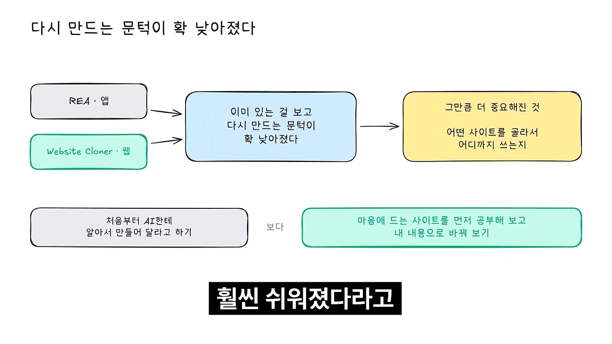